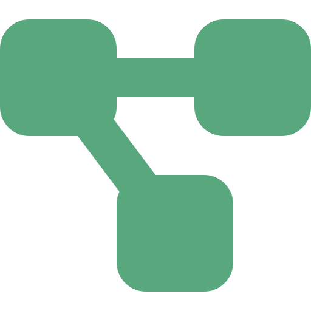
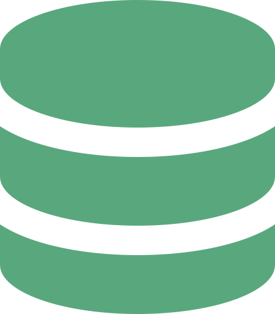
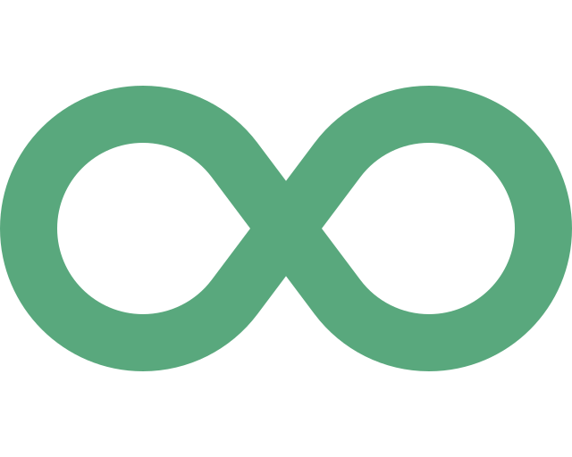

Portada
Arquitectura de Software
Semana 11 — Arquitecturas Modernas y Ciclo DevOps
Universidad de Antioquia · Ingeniería de Sistemas · 2554608 · 2026-2

Apertura
Una llamada de video, un catálogo que carga en partes, un mensaje entre microservicios.
Todo eso también es arquitectura.
Transición
Hoy: cuatro piezas modernas, un solo ciclo que las despliega
En las últimas semanas vieron el catálogo de patrones y los estilos que los organizan. Esta sesión toma cuatro tecnologías concretas que resuelven problemas actuales muy distintos entre sí — comunicación entre servicios, fragmentación del frontend, video en tiempo real, y persistencia de datos — y cierra con el ciclo que hace posible llevar cualquiera de ellas a producción de forma confiable.
Es una sesión ancha, no profunda: el objetivo es que reconozcan qué es y para qué sirve cada una, con su origen real, no que dominen cada tecnología a fondo.
Concepto · Tema 1
gRPC: llamadas remotas eficientes entre servicios
gRPC es un framework de comunicación entre servicios creado por Google, basado en RPC (Remote Procedure Call — llamado a procedimiento remoto): un servicio invoca una función de otro servicio como si fuera local, y el framework se encarga de empaquetar la llamada, enviarla por la red y traer la respuesta de vuelta.
- Transporte: usa HTTP/2 en vez de HTTP/1.1 — permite multiplexar varias solicitudes sobre una sola conexión, en lugar de abrir una conexión por cada una.
- Serialización: usa Protocol Buffers (protobuf), un formato binario compacto, en vez de texto plano como JSON o XML — mensajes más pequeños y más rápidos de procesar.

Concepto · Tema 1 · Origen
De CORBA a gRPC: el mismo problema, resuelto más liviano
| Protocol Buffers | Formato interno de Google desde cerca de 2001; liberado como open source en 2008 |
|---|---|
| gRPC | Liberado como open source por Google en 2015, construido sobre HTTP/2 |
En la Semana 6 vieron Broker (catálogo POSA) resolviendo comunicación entre componentes distribuidos con estándares como CORBA, populares en los años 90. gRPC resuelve exactamente el mismo problema — invocar código en otro proceso o máquina como si fuera local — pero con un transporte moderno (HTTP/2) y una serialización mucho más liviana que las de esa época.
Mismo problema de siempre, solución más eficiente: no es un concepto nuevo, es una implementación moderna de Broker.
Concepto · Tema 2
Microfrontends: microservicios, pero en el frontend
En la Semana 8 vieron Microservicios: dividir el backend en servicios pequeños e independientes, desplegados por separado. Los microfrontends extienden esa misma filosofía a la interfaz de usuario: una aplicación web grande se divide en fragmentos independientes — cada uno desarrollado, probado y desplegado por un equipo distinto — que se ensamblan en tiempo de carga en una sola interfaz coherente para el usuario final.
- Cada equipo dueño de un fragmento puede usar su propio stack tecnológico y su propio ciclo de despliegue.
- El riesgo principal es la consistencia visual y de experiencia entre fragmentos hechos por equipos distintos.
El término fue popularizado por ThoughtWorks en su publicación Technology Radar de 2016, donde lo listaron como tendencia emergente a adoptar.

Concepto · Tema 3
WebRTC: tiempo real, directo entre navegadores
WebRTC (Web Real-Time Communication) es una tecnología que permite comunicación de audio, video y datos en tiempo real directamente entre navegadores, sin plugins ni software adicional instalado.
- Usa comunicación peer-to-peer (P2P): los navegadores se conectan directamente entre sí para intercambiar el flujo de audio/video, en vez de que todo pase obligatoriamente por un servidor intermedio.
- El servidor solo se necesita al inicio, para que ambos navegadores se encuentren y negocien la conexión — no para transportar el video después.
Concepto · Tema 3 · Origen
De una adquisición a un estándar de la web
| 2010 | Google adquiere Global IP Solutions (GIPS), empresa especializada en tecnología de audio/video en tiempo real |
|---|---|
| 2011 | Google anuncia WebRTC como proyecto open source |
| Estandarización | Conjunta entre el W3C y el IETF |
Habilitó productos que probablemente ya usaron: Google Hangouts primero, y más adelante Google Meet, entre muchas otras aplicaciones de videollamada en el navegador que no requieren instalar nada.
Concepto · Tema 4
Persistencia políglota: una base de datos por necesidad
Persistencia políglota (polyglot persistence) es usar distintos tipos de base de datos dentro del mismo sistema, cada una elegida según el tipo de dato y el patrón de acceso — en vez de forzar todo dentro de un único motor.
| Tipo de dato / necesidad | Tipo de base de datos |
|---|---|
| Transacciones con consistencia fuerte | Relacional (SQL) |
| Relaciones complejas entre entidades | De grafos |
| Catálogos con estructura flexible | Documental (NoSQL — bases que no usan el modelo relacional de tablas) |
| Métricas y eventos en el tiempo | De series de tiempo |

Concepto · Tema 4 · Origen
De la teoría al caso de escala real
El término fue popularizado por Martin Fowler y Pramod Sadalage alrededor de 2011, en el contexto del auge de las bases de datos NoSQL como alternativa (no reemplazo total) a las relacionales.
Caso de adopción real: empresas de streaming y de gran escala como Netflix combinan múltiples motores de base de datos según la necesidad de cada parte del sistema — por ejemplo, motores distribuidos de gran volumen para unos datos y motores transaccionales para otros. No es una excepción: es la norma en sistemas grandes y distribuidos.
La arquitectura correcta no es "una base de datos para todo", sino la combinación correcta para cada necesidad.
Transición
¿Cómo se lleva todo esto a producción?
Ya vieron cuatro piezas tecnológicas distintas: comunicación entre servicios, frontend fragmentado, video en tiempo real y bases de datos especializadas. Cada una la construye y despliega un equipo, muchas veces por separado.
Falta la pieza que las conecta a todas: el ciclo que permite integrar, probar y desplegar cualquiera de ellas de forma rápida y confiable — DevOps.
Caso · Ficha técnica
Patrick Debois y el nacimiento del término "DevOps"
| Autor del término | Patrick Debois |
|---|---|
| Evento fundacional | Primera conferencia "DevOpsDays" |
| Lugar y año | Gante, Bélgica, 2009 |
| Motivación | Frustración con la separación tradicional entre los equipos de desarrollo (Dev) y de operaciones (Ops), que trabajaban con objetivos y calendarios distintos |
| De dónde viene el nombre | Contracción de "Development" + "Operations", tomada del nombre de la propia conferencia |
Caso · Ficha técnica
Flickr: "10+ Deploys per Day"
| Autores | John Allspaw y Paul Hammond |
|---|---|
| Charla | "10+ Deploys per Day: Dev and Ops Cooperation at Flickr" |
| Conferencia | Velocity, 2009 |
| Lo que mostraron | Cómo Flickr lograba desplegar a producción más de 10 veces al día, mediante colaboración estrecha entre desarrollo y operaciones — no como equipos separados que se pasan el trabajo |
| Por qué importó | En 2009, la idea de desplegar a producción tantas veces al día era radical: la norma eran despliegues infrecuentes, planeados y arriesgados |
Debois acuñó el nombre en Gante; Allspaw y Hammond, en Velocity, mostraron con datos por qué el movimiento importaba. Ambas cosas ocurrieron en 2009.
Concepto · Tema 5
DevOps: una cultura, no una herramienta
DevOps es una cultura y un conjunto de prácticas que buscan unir el trabajo de desarrollo (Dev) y operaciones (Ops), automatizando la integración, las pruebas y el despliegue para entregar software de forma más rápida y confiable.
No es un rol, ni un producto, ni una herramienta específica: es una forma de trabajar donde quienes escriben el código también son responsables de que funcione bien en producción, y donde el ciclo completo — desde el commit hasta el usuario final — está automatizado el mayor tiempo posible.

Concepto · Tema 5 · Prácticas
Qué incluye el ciclo, en corto
| Práctica | Qué resuelve |
|---|---|
| CI/CD (Integración Continua / Entrega Continua) | Cada cambio se integra, se prueba y se prepara para desplegar automáticamente, en vez de acumular cambios grandes y riesgosos |
| Infraestructura como código | Los servidores y entornos se definen en archivos versionados, no se configuran a mano uno por uno |
| Monitoreo y observabilidad | Saber qué está pasando en producción en tiempo real, para reaccionar rápido cuando algo falla |
Este es el mapa general — las herramientas concretas de cada práctica se ven más adelante en el curso.
Interacción
¿Cuál de las cinco ya está presente en su proyecto?
En equipos, respondan rápido:
- De gRPC, microfrontends, WebRTC, persistencia políglota y DevOps: ¿cuál (si alguna) ya usan o consideraron usar en CodeF@ctory?
- Si ninguna aplica todavía, ¿cuál tendría más sentido agregar primero, y por qué?
5 minutos · respondan en voz alta o en el chat
Síntesis
Ideas clave de hoy
- gRPC (Google, open source 2015) usa HTTP/2 y Protocol Buffers (Google, open source 2008) para comunicación eficiente entre servicios — la versión moderna del problema que resolvía Broker/CORBA.
- Microfrontends (ThoughtWorks, 2016) extienden la filosofía de microservicios a la interfaz de usuario: fragmentos independientes ensamblados en una sola aplicación.
- WebRTC (Google/GIPS, 2010–2011, estandarizado por W3C e IETF) permite audio, video y datos en tiempo real directamente entre navegadores, sin plugins.
- Persistencia políglota (Fowler y Sadalage, 2011) usa distintos motores de base de datos según el tipo de dato y patrón de acceso — la norma en sistemas grandes como Netflix.
- DevOps (Debois, DevOpsDays 2009; Allspaw y Hammond, Flickr/Velocity 2009) es la cultura y las prácticas que unen desarrollo y operaciones para desplegar rápido y de forma confiable — el ciclo que hace posible llevar las otras cuatro piezas a producción.
Cierre
Para la próxima semana
- Repasar las cinco piezas de hoy: qué problema resuelve cada una y su dato de origen.
- Pensar en su proyecto de CodeF@ctory: ¿qué decisión arquitectónica tomarían distinto si tuvieran que priorizar solo una de las cinco?
La próxima sesión cierra la Unidad 2 con Antipatrones de Arquitectura de Software: las decisiones que parecen buena idea y terminan costando caro.